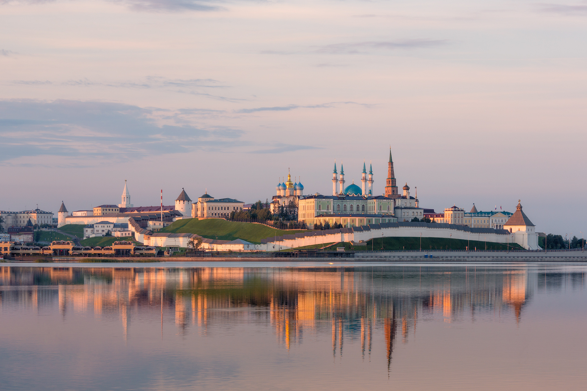

КАЗАНЬ – столица Республики Татарстан и один из самых древних городов России.
Казань расположилась на левом берегу Волги в том месте, где в нее впадает река Казанка.
Эта река течет с северо-востока на запад, пересекая центр города и условно разделяя его на две части.
Попасть из одной части Казани в другую очень легко,
так как городские районы связывают дамбы, мост и линия метрополитена.
Климат города умеренно-континентальный. Он характеризуется сравнительно холодной и снежной зимой,
а также тёплым, немного дождливым летом. Самое лучшее время, чтобы посетить столицу Татарстана период с мая по сентябрь.
Дата основания: 1005 г.
Население: 1 259 173 человека
Площадь: 588,9844 км²
Язык: русский, татарский
Время: московское (UTC +3)
Высота центра: 60 м